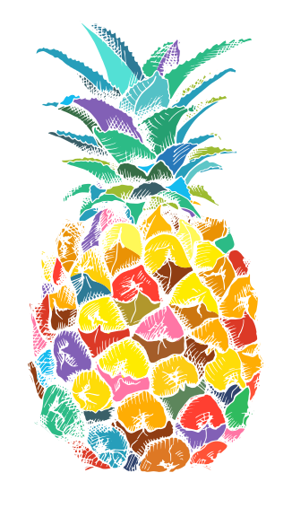
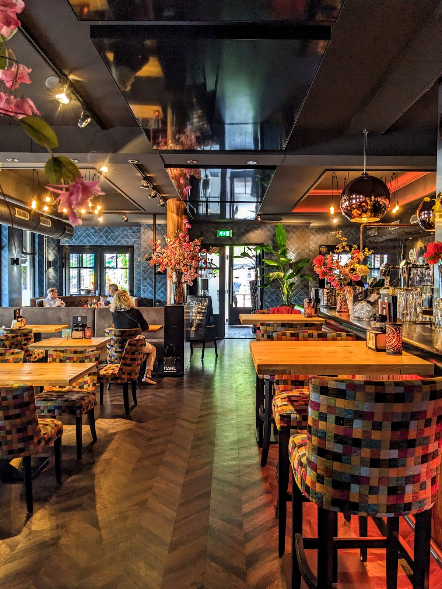
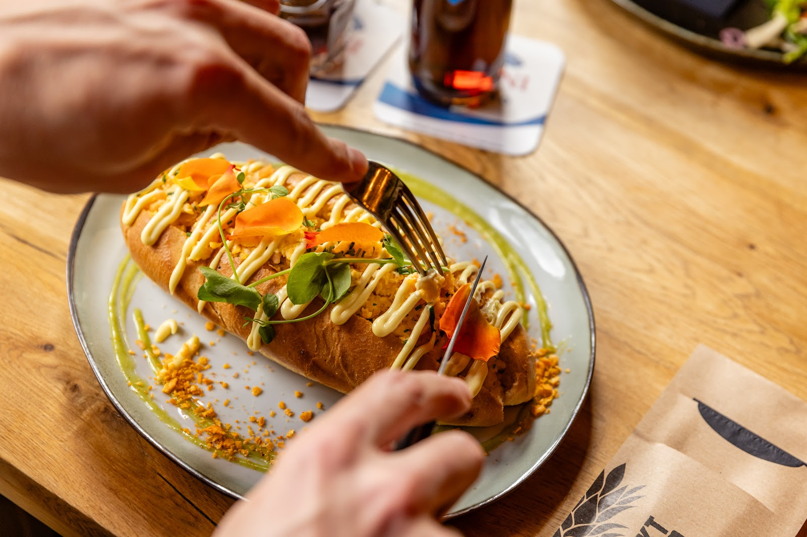
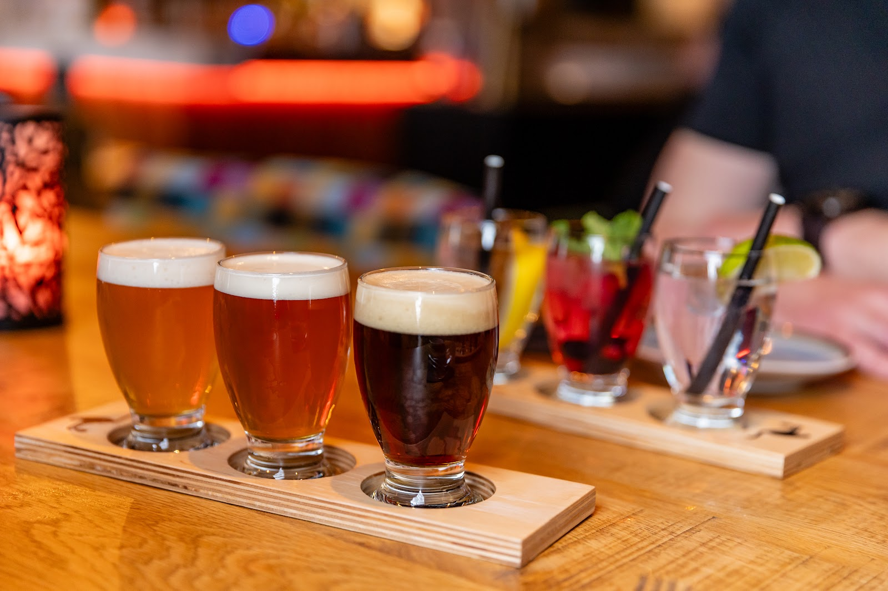
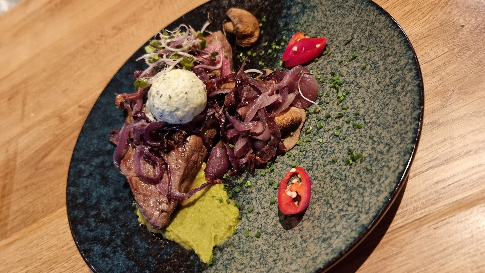
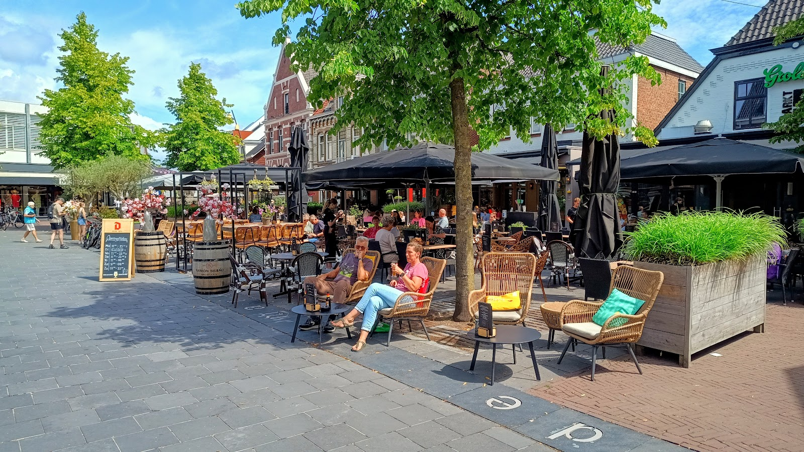
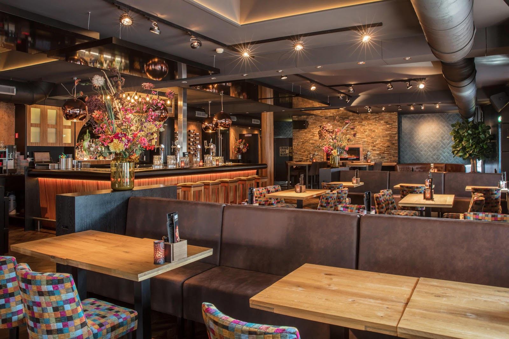
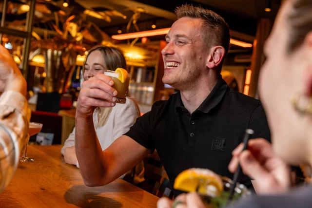
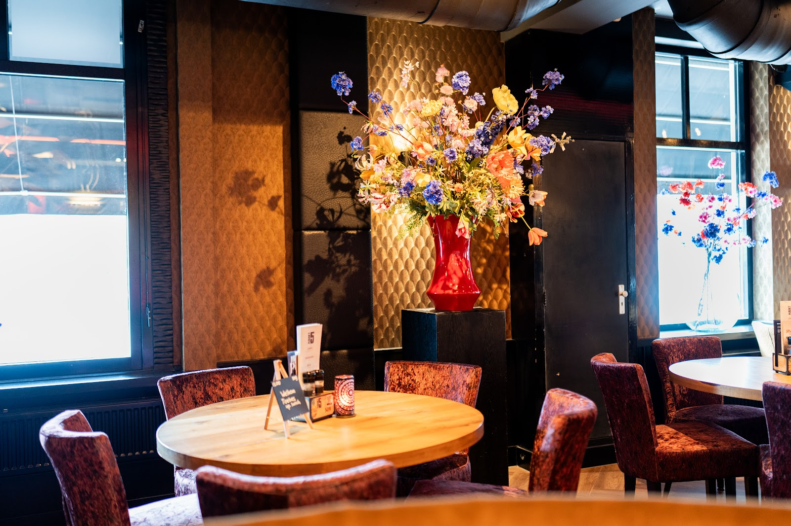

Grand café aan de Markt, Lichtenvoorde
Kom het leven vieren.
Lunch, borrel en diner met een flinke snuf New York. Op het terras aan de Markt of binnen bij het koperen barlicht. We zetten graag een tafel voor je klaar.
4,3 uit 1071 Google-reviews


Van eerste broodje tot laatste rondje.
Markt 5 is geïnspireerd op New York, de stad die nooit slaapt. Een smeltkroes van culturen en keukens, en dat proef je de hele dag door.
-

Lunch
11.00 tot 16.30Sandwiches op landbrood, baguettes, tosti's, soep en een klassiek twaalfuurtje. Ook voor de kleintjes is er een eigen kaart.
-

Borrel
elk momentEen biertje, een glas wijn of een van onze cocktails, met bites erbij. Een glas whatever-you-feel-like.
-

Diner
17.00 tot 21.00Aan tafel met de New Yorkse keuken als inspiratie, rustig binnen of buiten op het terras. Voor groepen is er ook Next Door, naast de deur.
What the fork are we gonna eat?
Taste New York, aan de lunchtafel.
Een greep uit de lunchkaart. Prijzen in euro's.
Sandwiches
- M5 Signature13,50
Landbrood met warm vlees, varkensprocureur, gebakken ui, champignons en satésaus
- Wallstreet Sandwich13,00
Landbrood met brie uit de oven, honing, walnoten en tomaat
- Carpaccio Sandwich14,50
Rundercarpaccio, truffelmayonaise, kaas, rucola in pesto en pijnboompitten
- Healthy Dutchman11,00
Landbrood gezond met ham, kaas, gekookt eitje, tomaat en groene kruidendressing
Specials
- Plate N.Y. Burger20,50
Rundvleesburger van slager Gosselink met bacon, of vegetarisch. Cheddar, augurkenrelish, homemade burgersaus en friet
- Plate Saté23,00
Spies van kippendijen met pindasaus en seroendeng
- Pulled Chicken14,50
Baguette met pulled chicken, slamelange, cherrytomaten en barbecuesaus
- Garden Sandwich11,50
Baguette met geroosterde groenten, pompoenhummus, crispy falafel en labneh
Classics
- Tomato Twist7,50
Tomatensoep met gehaktballetjes en croutons
- 12 O'Clock14,50
Klassiek twaalfuurtje met tomatensoep, rundvleeskroket en gebakken ei met ham en kaas
- M5 Toast14,00
Grote tosti met ham, kaas, chorizo, gebakken ui, champignons en barbecuesaus
Kids
- Mini Pancakes7,50
Poffertjes met poedersuiker, stroop en smarties
- Snack Attack6,50
Friet en appelmoes met drie snacks naar keuze, of één kroket
- Mini Donut7,50
Gevuld met oreo-cheesecake, oreo crumble en een bol vanille-ijs
In de zaak is ook een pinda- en notenvrije, glutenvrije en lactosevrije kaart. Duitse en Engelse kaarten zijn er ook: German and English menus available on site. Tijdens events geldt een aangepaste kaart.
Volledige kaart en dinerBuiten op de Markt, binnen tussen de bloemen.
Bij mooi weer zit je op ons terras midden op de Markt. Binnen is het minstens zo gezellig, en naast de deur hebben we Next Door voor groepen en feesten.




2006 tot 2026
Twintig jaar een warm welkom.
Wat begon in een oude drogisterij is uitgegroeid tot een begrip in Lichtenvoorde en omstreken. Onze belofte is nog steeds dezelfde: het gevoel van een warm welkom, elk moment van de dag.
Stand tall, wear a crown
and be sweet.
Ramón Heijnst en Wout Gerritsen, namens Team M5
2006
Start. Van oude drogisterij naar hedendaagse horeca.
2010
De serre wordt aangebouwd.
2015
Uitbreiding met Next Door.
2018
Ramón en Wout treden toe.
2023
Nieuw terras en een nieuwe specialiteit: cocktails.
2026
Jubileumjaar. Check onze krant, The M5-Times, en de socials.
Wat er te doen is.
Quizzen, borrelen, brunchen. Tijdens events zijn er helaas geen buitenreserveringen mogelijk en geldt een aangepaste kaart.
Hele agenda op markt5.nl-
12 nov
Hap & Stap Lichtenvoorde
Een walking dinner langs Markt 5, Markant, De Driehoek en De Koppelpaarden. Vier gangen met telkens een bijpassend drankje, van 18.30 tot ongeveer 22.30. € 79 per persoon, opgeven kan tot en met 6 november.
-
Maandagen
in novPubquiz Nights
Teams van maximaal vijf personen, gratis meedoen met een borrelhapje tussendoor. Inloop 19.30, start 20.00. De beste drie teams per avond spelen de finale op 7 december. Opgeven via info@markt5.nl. Op quizavonden is borrel en diner vanaf 17.00 in Next Door.
-
15 nov
Sinterklaasintocht
De Sint komt naar de Hamalandhal. Daarna op steenworp afstand warme chocolademelk, gebak en bokbier bij ons.
-
10, 11, 17, 18 dec
Vrij.Mi.Bo. X-mas editions
De drukke en geliefde middagen en avonden voor bedrijfsborrels en -diners, in Markt 5 en Next Door. Voor groepen maken we vooraf een programma en menuvoorstel: mail en vraag naar Wout.
-
13 dec
Bottomless Brunch, Christmas special
Een uitgebreide kerstbrunch. Kijk voor de details in de agenda op markt5.nl.
Gasten over Markt 5.
4,3 uit 1071 reviews op Google
★★★★★
“Mooie zaak met attente/persoonlijke bediening en service. Druk terras. Wij aten binnen in een sfeervolle en heerlijk rustige ambiance met leuke kunst aan de muur. Smakelijke hamburger en shrimpburger met salade en frietjes. Acceptabel prijsniveau. Niks. Mis. Mee.”
★★★★★
“We kwamen er terecht door waardebonnen van de postcodeloterij. Inmiddels 2x hier geweest en zowel buiten als binnen gezeten. Met mooi weer is het mooi en gezellig zitten op het terras maar binnen is het misschien wel nog gezelliger en sfeervoller. Spontane mensen in de bediening, erg lekker en vers eten (…)”
Tot op de Markt.
Bel om een tafel te reserveren, of mail voor groepen, borrels en events.
Openingstijden
| Maandag | 11.00 tot 23.00 |
| Dinsdag | Gesloten |
| Woensdag | 11.00 tot 23.00 |
| Donderdag | 11.00 tot 23.00 |
| Vrijdag | 11.00 tot 00.00 |
| Zaterdag | 10.00 tot 00.00 |
| Zondag | 12.00 tot 22.00 |
Keuken: lunch 11.00 tot 16.30, diner 17.00 tot 21.00.
Maandag vanaf 17.00: borrel en diner in Next Door, vanwege de pubquiz in Markt 5.
Feestdagen: 24 en 31 december tot 16.00, 1 januari gesloten.